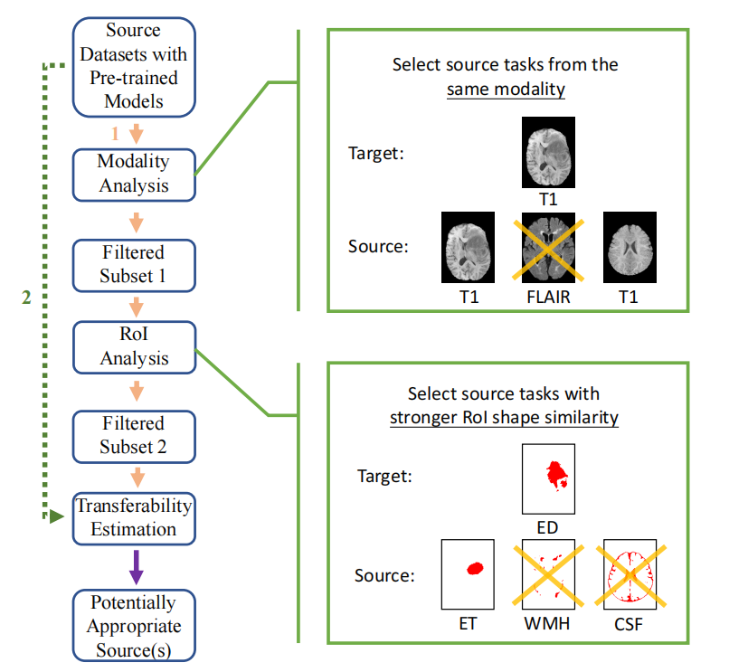

Problem Description
When we have a pool of source tasks and a target task, we need to find out which source task we should transfer from in order to achieve the best transfer performance on the target task.
The most common source selection approach is to fine-tune each source model on the target task to obtain a transfer accuracy on the target test set. This transfer accuracy is called the ground truth transferability, which can be represented by a certain segmentation accuracy evaluation metric, such as Dice score. Then the task that corresponds to the source model that achieves the best transfer accuracy will be selected as the most appropriate source. However, this naive method is very computationally expensive and may become very inefficient when the number of source tasks is too large.
Inspired by the differences in modalities and RoI shapes of medical image segmentation tasks, we propose a source selection framework that incorporates the analysis of image characteristics with current state-of-the-art transferability estimation metrics. Given a pool of source tasks and a target task, we propose to analyze the image characteristics of tasks before computing transferability estimation metrics. Specifically, our framework consists of three steps: modality analysis, RoI anaylsis and transferability estimation, as shown in following flow chart.

the Information of Target Task
We perform experiments on three publicly available brain MRI segmentation datasets: FeTS 2021 for brain tumor segmentation, iSeg-2019 for brain matter seg- mentation, and WMH for white matter hyperintensities segmentation. And here, we will only demonstrate some examples of dataset FeTS2021.
For each sample in FeTS 2021 dataset, volumes of 4 modalities are available, including T1-weighted (T1), T2-weighted (T2), Fluid-Attenuated Inversion Recovery (FLAIR), and T1-Weighted Contrast-Enhanced (T1CE). The volume size is 240*240*155. Corresponding labels of edematous tissue (ED), enhancing tumor (ET), and necrotic tumor core (NCR) are manually segmented by clinical experts.
This dataset is further split into 22 partitions by the provider, according to different institutions and information extracted from images. Thus, each partition can be seen as an individual domain. Here, we additionally denote a task by “Task-Partition-Modality”.
e.g., “ET-14-T1” represents the task of enhancing tumor segmentation on T1 modality using data from partition 14.
For this target task ET-22-T2, its labels is enhancing tumor(ET), and its modality is T2-weighted (T2).This task is a little part of ET-T2 this big dataset.


Modality Analysis
Select source tasks that are under the same modality as the target task to generate Subset 1 (we define a subset as a smaller group of tasks selected from a bigger group of tasks)
Source Task Table(s)
| [[ line ]] |
RoI Analysis
Within Subset 1 (in which source tasks are under the same modality as the target task), select source tasks whose RoI shapes are more similar to that of the target task by calculating the shape similarity to generate Subset2. Specifically, we propose to use structural similarity index measure (SSIM) to quantify the RoI shape similarity.
Subset1 Table(s)
| [[ tables.roi_title[index - 1] ]] | [[ line ]] |
Transferabiltiy Estimation
Within Subset 2, we apply a certain analytical transferability estimation metric to select potentially appropriate source tasks. In this work, we choose H-score or OTCE as the metric.
Subset2 Table(s)
Final Results
Finally, we will show the results by analytical methods and ground truth transferability, and compare and validate the feasibility of the proposed model.